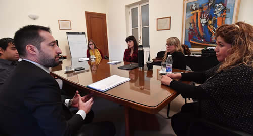

Real Chubut - Agencia de Noticias


Huichaqueo se reunió con Daroca por el funcionamiento de los servicios de Protección de Derechos

Trabajo conjunto con el Poder Judicial
Se trató del primer encuentro con el Defensor General de la provincia donde se acordó comenzar un "trabajo conjunto" entre el Poder Ejecutivo y el Judicial, fundamentalmente con respecto al funcionamiento de los Servicios de Protección de Derechos.
La ministro de la Familia y Promoción Social, Leticia Huichaqueo, recibió este miércoles en su despacho de Casa de Gobierno al Defensor General de la provincia, Sebastián Daroca. Durante la reunión se abordaron diferentes temáticas y se acordó "llevar a cabo un trabajo articulado, además se analizó el funcionamiento de los servicios de protección de derechos".
Del encuentro también formaron parte el subsecretario de Desarrollo Humano y Familia, Facundo Moreyra, y parte del equipo técnico del Ministerio.
TRABAJO CONJUNTO
Huichaqueo explicó que la reunión se realizó con el fin de evaluar "temas que hacen al funcionamiento y a la misión que tenemos como Ministerio fundamentalmente en la órbita de la Subsecretaría de Desarrollo Humano y Familia de la cual dependen los servicios de protección de derechos".
Hizo hincapié en que "vimos con buen agrado la predisposición de Daroca para poder trabajar con nosotros en forma conjunta a raíz de la responsabilidad que él tiene, porque nosotros estamos vinculados desde lo legal con todas las asesorías, por eso nos pareció importante intercambiar distintas situaciones que tienen que ver con nuestro trabajo, siempre tratando de mejorar la calidad en cuanto a la atención de las situaciones que hacemos en forma conjunta".
"Nuestro principal objetivo tiene que ver con los servicios de protección de derechos", aseguró y remarcó que "el gobernador Das Neves ha tomado una decisión importante que tiene que ver con el recurso económico que se les ha brindado a cada uno de los servicios".
Además "también acordamos con Daroca una agenda conjunta con respecto a futuras capacitaciones y en base a eso poder articular nuestras oficinas" y detalló que "nosotros ya estamos trabajando en la capacitación y la formación de los profesionales de los equipos técnicos".
RESOLUCIÓN DE CASOS
Consultada sobre la importancia de un diálogo fluido con la Defensoría General, la ministro de la Familia indicó que "este vínculo es fundamental para poder llegar con aquellas decisiones que debemos tomar sobre determinadas situaciones donde se vulneran derechos, por eso acordamos establecer reuniones periódicas para darle atención que el vecino necesita".
"Tenemos un registro importante, por eso le hemos manifestado al Defensor General distintas situaciones que tienen que ver con casos específicos que trabajamos diariamente y en base a eso vamos a poder ir logrando acuerdos, basados en el diálogo, y para ello contamos con el compromiso de Daroca, para acortar distancias e ir logrando la resolución de los casos".
PROTECCIÓN DE DERECHOS
Por su parte el Defensor General de la provincia manifestó que "estoy muy contento con el encuentro que mantuvimos con la ministro y su equipo, debemos empezar a trabajar en forma conjunta".
Lo fundamental "es trabajar coordinadamente el tema de protección de derechos, esta es una primera charla para tratar de lograr que el funcionamiento de los servicios donde está involucrado el Ministerio y las distintas municipalidades sean cada vez más eficiente y nosotros desde el punto de vista del Poder Judicial, en este caso desde la Defensa, poder aportar nuestro granito de arena para que esto funcione".
"El objetivo es que este sea el inicio de un vínculo donde las reuniones sean periódicas, en cada municipio el trabajo es arduo y nuestra obligación constitucional y legal es la protección de las personas más vulnerables que acuden a los servicios de la Defensa Pública, a las asesorías y ahí es donde está la actuación de los defensores y los asesores pidiendo por la protección de los derechos".
Por eso indicó que "estos canales de diálogo nos ayudan a los dos, tanto al Ministerio de la Familia como a nosotros", concluyó el funcionario judicial.
PUBLICIDAD